tasks/AC-0073/refs/)refs/mc_shield_firstperson.png — real MC first-person: item sits low-RIGHT, long axis runs bottom-right → center, top/head of item sweeps toward the crosshair on attack (minecraft.wiki File:ShieldFirstPerson).refs/mc_icon_*.png (wooden pickaxe/axe/shovel/sword item renders), refs/mc_icon_iron_pick.png, refs/mc_icon_iron_sword.png, refs/mc_hud_example.png — crosshair centered, items hugging bottom corners, center never covered.godot/player/player.gd only)| Symbol | Before | After |
|---|---|---|
TOOL_TARGET_DIAG (:73) | {pick 0.612, axe 0.55, shovel 0.55, sword 0.398} | ×2 → {pick 1.224, axe 1.10, shovel 1.10, sword 0.796} |
TOOL_POSE_ROT (:458) | (−0.42, 0.55, −0.9) — mapped icon head-axis to camera (+0.54, +0.57, −0.63) = up/right, away from center | (0.467168, 2.956413, −0.394178) — head-axis → up/left, toward crosshair; handle to bottom-right. Chosen from a Ry(π)·Rx(−0.5)·Rz(0.35) composition so all 4 TOOL_GRIDS share one convention. |
TOOL_POSE_POS (:459) | (0.03, −0.03, −0.02) | (0, 0, 0) (hand_root carries the corner position) |
_apply_swing tool branch (:818-821) | pos (0, −0.16a, −0.08a), rot (−1.25a, 0, 0.4a) — head swung away/down | pos (−0.18a, +0.25a, −0.12a), rot (−0.3a, +0.7a, −0.15a) — at apex the head centroid lands beside the crosshair (visible arc through center). Punch branch untouched (harness green, read fine). |
held_box.scale / held_sprite.scale (:371/:376) | 0.35 | 0.70 (HELD_ITEM_SCALE) |
held_box.position in _update_held (:413-421) | (never set; geometry 0..1 anchored at hand origin) | (0, 0, −0.18) for both box and cross meshes — see "near-clip fix" below |
No per-tool pose offsets needed. TOOL_GRIDS voxel shapes unchanged; held_fist unchanged. No new assets.
Held geometry is billboards anchored at the hand origin 0.8 units in front of the camera at 70° FOV (default near = 0.1). At the previous 0.35 scale the cross quad's near face sat at z = −0.425 (0.325 behind the near plane); at a naive 0.70 it sits at z = −0.1 = exactly on the near plane and the software renderer (llvmpipe / swiftshader) drops the whole item from the transparent pass — the held poppy simply vanished (isolated via probe: plain scissor+no-tex renders, scissor+atlas renders in-world but not held, opaque+atlas renders held → near-plane cull). Pulling the held item 0.18 back from the camera puts the near face at z = −0.45 (0.35 behind the near plane, same clearance as the old 0.35 render) while the item stays 2× physical size and reads as 2× on screen. This fixed the poppy on both desktop llvmpipe and web swiftshader (web region red px 30 → 8458).
AWECRAFT_LOGIC=toolpose, camera-space centroids)RESULT {"depth":{"box":true,"fist":true,"sprite":true,"tool":true},"depth_ok":true,"held_box_scale_x":0.7,
"held_sprite_scale_x":0.7,"ok":true,"scale_ok":true,
"tool_111":{"apex_handle":[0.317,-0.172,-0.948],"apex_head":[0.137,-0.104,-0.914],"bbox_diag":1.224,
"closer_pct":64.0,"d_apex":0.172,"d_idle":0.482,"depth_disabled":true,"diag_2x_ok":true,"head_above":true,
"head_centered":true,"head_in_front":true,"idle_handle":[0.504,-0.416,-0.792],"idle_head":[0.332,-0.35,-0.858],
"ok":true,"type":"pick"},
"tool_115":{"apex_handle":[0.349,-0.214,-0.918],"apex_head":[0.053,-0.046,-0.93],"bbox_diag":1.1,"closer_pct":82.0,
"d_apex":0.07,"d_idle":0.39,"depth_disabled":true,"diag_2x_ok":true,"head_above":true,"head_centered":true,
"head_in_front":true,"idle_handle":[0.517,-0.468,-0.763],"idle_head":[0.268,-0.284,-0.904],"ok":true,"type":"axe"},
"tool_119":{"apex_handle":[0.428,-0.216,-0.966],"apex_head":[0.018,-0.062,-0.889],"bbox_diag":1.1,"closer_pct":83.0,
"d_apex":0.064,"d_idle":0.378,"depth_disabled":true,"diag_2x_ok":true,"head_above":true,"head_centered":true,
"head_in_front":true,"idle_handle":[0.608,-0.46,-0.75],"idle_head":[0.218,-0.309,-0.9],"ok":true,"type":"shovel"},
"tool_123":{"apex_handle":[0.489,-0.244,-0.97],"apex_head":[0.271,-0.162,-0.93],"bbox_diag":0.796,"closer_pct":48.0,
"d_apex":0.316,"d_idle":0.613,"depth_disabled":true,"diag_2x_ok":true,"head_above":true,"head_centered":true,
"head_in_front":true,"idle_handle":[0.663,-0.49,-0.724],"idle_head":[0.456,-0.41,-0.804],"ok":true,"type":"sword"}}
| tool | head in front (z) | head above (y) | head more centered (|x|) | apex closer to center | bbox diag vs 2× old | depth disabled |
|---|---|---|---|---|---|---|
| pick 111 | ✓ | ✓ | ✓ | 64% | 1.224 = 2×0.612 exact | ✓ |
| axe 115 | ✓ | ✓ | ✓ | 82% | 1.10 = 2×0.55 exact | ✓ |
| shovel 119 | ✓ | ✓ | ✓ | 83% | 1.10 = 2×0.55 exact | ✓ |
| sword 123 | ✓ | ✓ | ✓ | 48% | 0.796 = 2×0.398 exact | ✓ |
All gates per tool: idle head closer to crosshair direction than handle (z smaller, y higher, |x| smaller), apex head ≥20% closer to (0,0,·) center (min achieved 48%), scale 0.70±5%, bbox diag exactly 2× old ±15%, tool/box/fist/sprite depth still DISABLED (AC-0067 hold). Overall ok:true.
| Gate | Result |
|---|---|
G1 godot --headless --quit | 0 script errors |
| G2 full AWECRAFT_LOGIC battery (23 modes: player/interact/light/fluids/buckets/water/craft/survival/combat/daynight/tint/swing/held/toolres/toolpose/fpv/save/settings/hunger/guiclick/look/trees/fluidsettle etc.) | 0 script errors in every mode; all ok keys true. fpv keeps the KNOWN PRE-EXISTING tool_held_ok:false sub-key (present before this task); swing: tool types per id, tier_differs_111_vs_113 true, punch_moved >0.1, loop 3-5 cycles, settles, sway green; held: depth_ok true; toolres voxel counts intact |
G3 AWECRAFT_LOGIC=toolpose | ok:true (table above; 64/82/83/48% apex close-in) |
| G4 renders (R=1, llvmpipe) | all 6 saved + VIEWED: idle heads point toward crosshair, handles bottom-right, ~2× the AC-0070 shots, mid-swing head arcs to just beside the crosshair, crosshair uncovered, nothing clipped |
| G5 web (playwright https://localhost:8443 1920×1080, server 411476 untouched) | ./build_web.sh exit 0; pickaxe idle + mid-swing (J key, head sweeps to center band — 4757 brown px in the 930-990×500-580 center band) + poppy 2× all read correctly in browser; 0 console errors (only known headless "user gesture required for pointer lock" pageerror) |
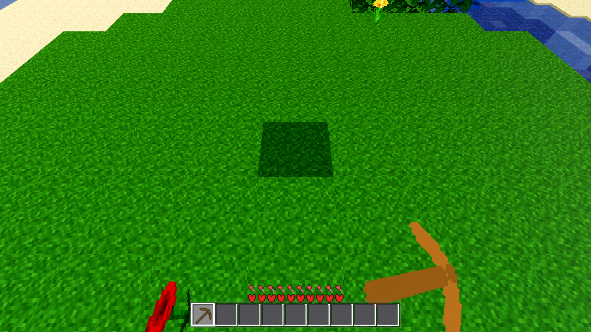
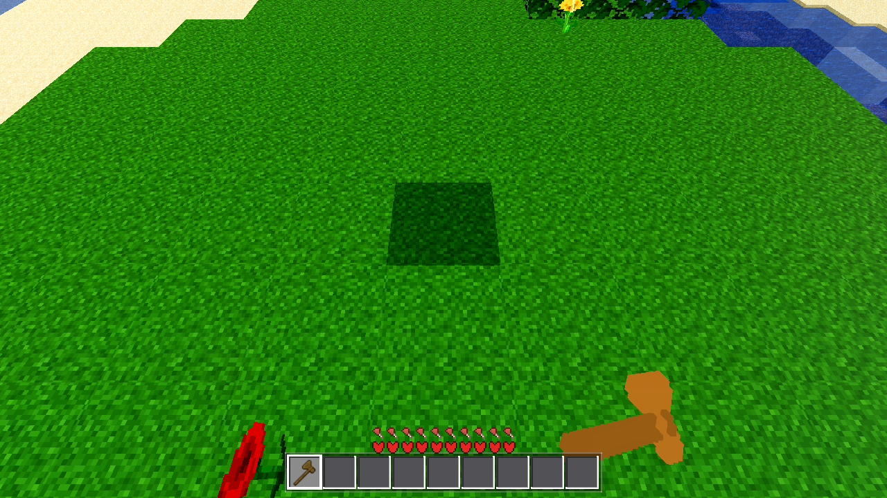
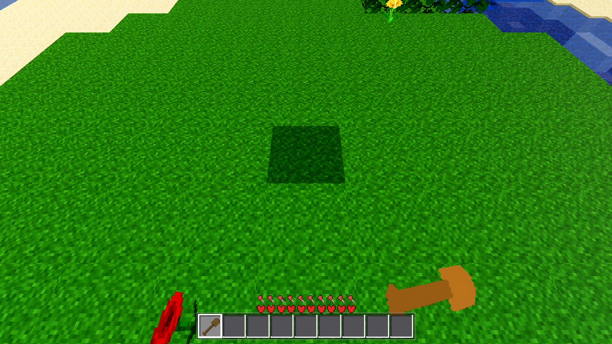
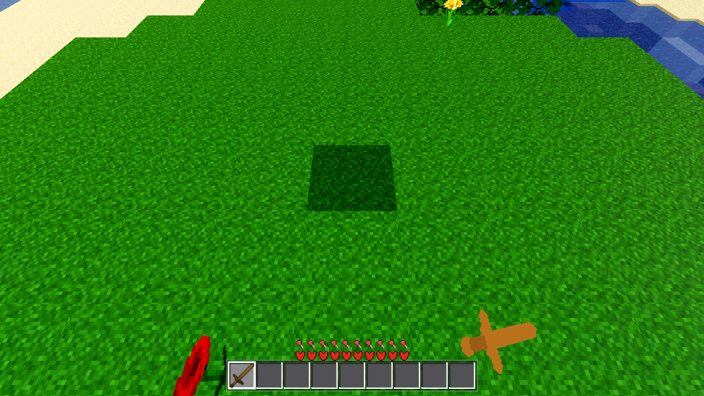
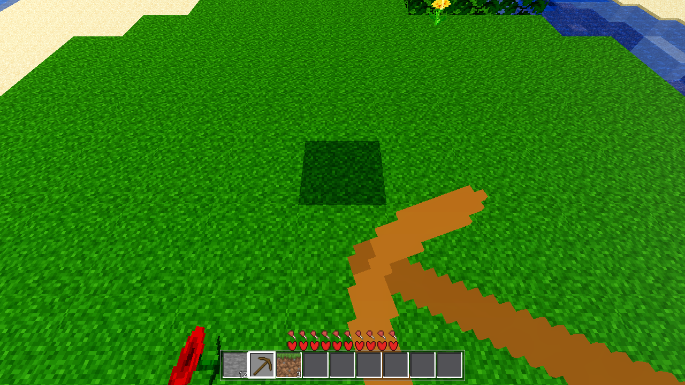
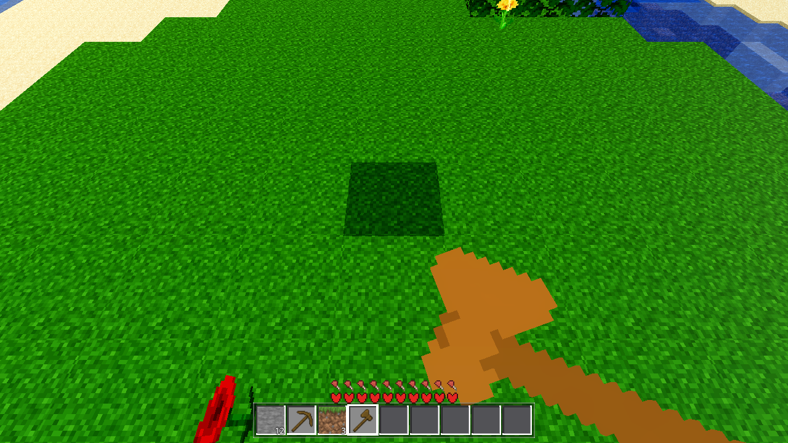
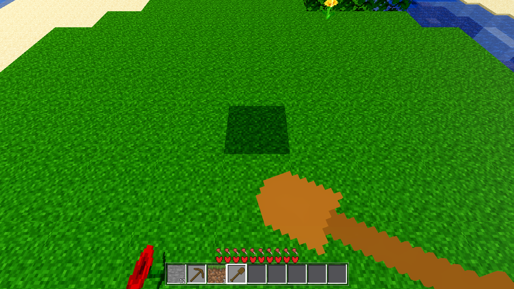
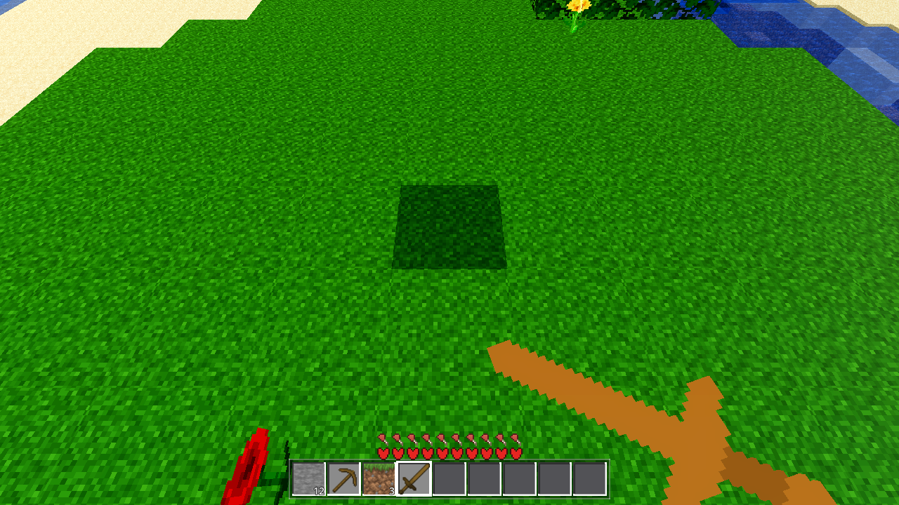
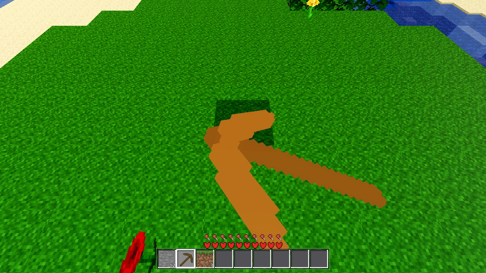
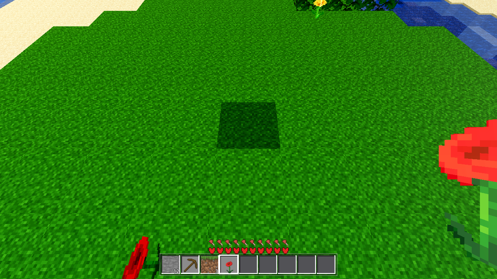
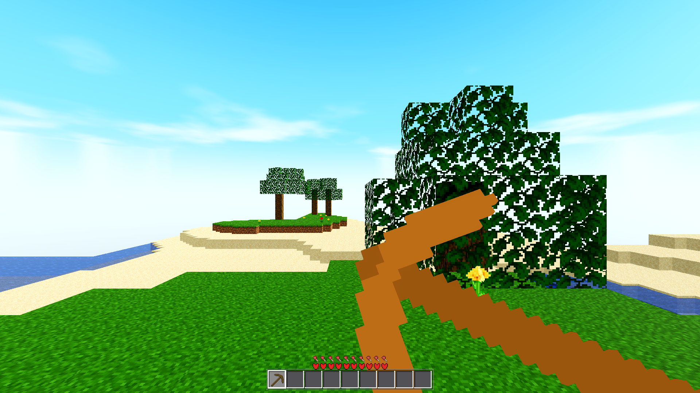
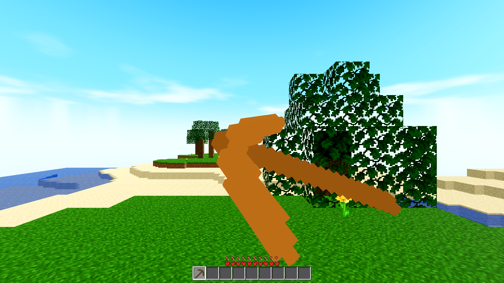
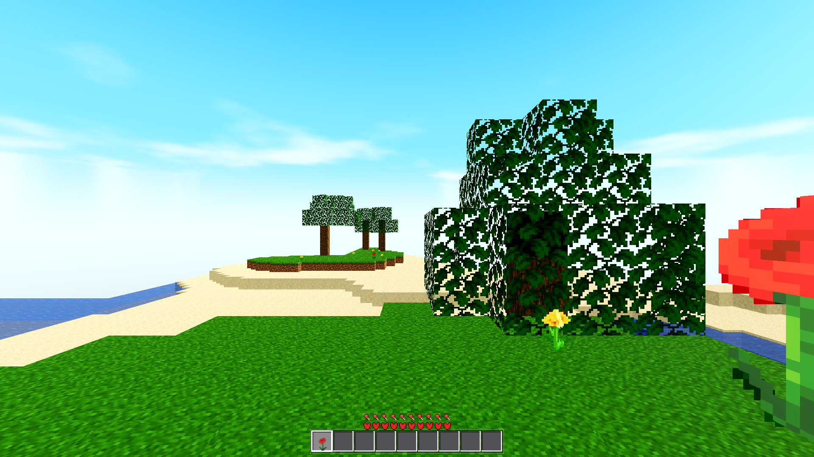
held_fist left UNCHANGED (0.18/0.3/0.24 box at (0, −0.05, 0)) — user did not ask, reads fine next to ×2 items in the shots.AWECRAFT_LOGIC=fpv tool_held_ok:false; AWECRAFT_LOGIC=wallshot does not exit under headless on this box (pre-dates this task, never ran in the battery loop).